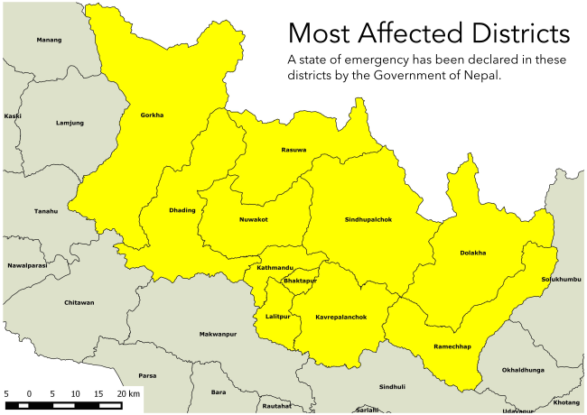

The objective of this site is to distribute maps extracted from OpenStreetMap data to aid in Earthquake mapping. The data has been developed by thousands of crowd-sourced volunteers, and in our estimations provides the most up to date maps of Nepal.
Maps will soon be available for all 11 most affected districts, and updated as frequently as we can. The 11 most affected districts, where a state of emergency has been declared are: Kathmandu, Bhaktapur, Lalitpur, Dhading, Kavre, Nuwakot, Sindhupalchowk, Dolakha, Gorkha, Rasuwa, Ramecchap.
With prayers for efficient recovery, the Kathmandu Living Labs team.
OSMAnd Data for all of Nepal Updated every half an hour
OSMAnd is a mapping application that allows you view maps for all of Nepal on Android phones. These maps are being updated daily using Satellite imagery by thousands of volunteers online, including edits by more than 2200 volunteers just since April 25th, when the earthquake struck. You will have access to maps for all of Nepal.

The government has now added the districts Makwanpur, Sindhuli, and Okhaldhunga to the list of highly affected areas, bringing the total list to 14 districts.
Hover on a district to find out more information.
Topo Maps are also available at Pahar.in District-level overview maps are also available here
Send an email to prabhas@quakemaps.org with the area / village name or print from here
For rescue teams unfamiliar with mapping tools, Kathmandu Living Labs is available to train and provide support on how to use maps for navigation and rescue work. Contact the Kathmandu Living Labs Situation Room at 01 620 5000
{kind=link}
{kind=link}
{kind=link}
{kind=link}
{kind=link}
{kind=link}
{kind=link}
{kind=link}